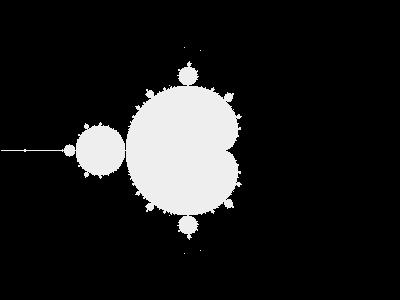

This is second part of pragmatic functional programming tutorial for Java developers. If you read my previous post regarding what functional programming is , well ... I'm glad you are back :) If you didn't, please take a look there as I'm going to write about concepts described previously.
We know basic concepts and techniques of functional programming. It's time for some advertising, why it's good to use these techniques and concepts and how they will improve our code.
Concurrent and parallel computations
If we look at microprocessors parameters historical data, like here: 42 Years of Microprocessor Trend Data , we can draw interesting conclusions. Moore's law still holds as number of transistors grows exponentially. Single thread performance increases slightly. The number of cores increases with a power law.
Once we have multiple cores available, it's not the big deal to make our programs concurrent. Just spawn tasks in separate threads and we are done. The real difficulty is in making our programs parallel.
There is essential difference between concurrent and parallel programs. Concurrent programs are capable to do different things at the same time, like accepting keyboard input and writing to disk simultaneously. Parallel programs are able to split single task into smaller parts and execute them in the same time on different processor cores or cluster nodes to complete faster, like sorting or computing some value from large data set.
There is difficult task of performing parallel computations at the front of us, to benefit from increasing microprocessors computation power and different approaches to parallelism exist.
Java concurrency model
The traditional approach in Java is to use shared state and protect it against concurrent access. Simply stating: 1
we run tasks simultaneously in separate threads, 2 every task updates shared state on completion, 3 we assure that only one task can update shared state at the same time. We can protect shared state using Java
language built in features like synchronized methods and blocks, locking primitives from java.util.concurrent.locks core
package. Looks easy and it is indeed ... for simple cases, but believe me, it's rapidly becoming extremely complex for more sophisticated cases. We can
make our programs thread safe by synchronizing all shared states, but it makes them serial and our parallelism goes down the drain. We can make our
programs more parallel by careful design, but we expose ourselves to multiple dangers like:
- race conditions
- threads starvation, deadlock and similar effects
- testing difficulties
- context switching overhead
Above issues produce many bugs, usually occurring in production environments and almost impossible to reproduce and test.
According to Murphy's law, If something can go wrong, it will go wrong ... when we are on vacations ... and our sales guys are performing VERY IMPORTANT presentation for VERY IMPORTANT prospect client.
Traditional model is difficult, lets consider some other options.
Parallelism in functional programming
In functional programming we use pure functions to construct our programs. It implies no side effects nor shared state, so there is no need for synchronization. We can safely run parallel computation because there is no need for shared state synchronization.
Before we start to parallelize our computation, we have to answer very important question - Can it be parallelized at all?
The answer depends on it's ability to be divided into pieces that can be executed in parallel. The bigger part of program can be parallelized then better. However, there are some theoretical limits described by Amdahl's law . Deciding if our program is a good candidate for parallelization is sometimes difficult. Usually we have some source of data and run computation on every element from this source. More divisible is the source and more costly is the single element processing, chances are higher that we can benefit from running it in parallel manner. However we split our job, either recursively or by some collection division, we need to take care of available parallelism level determined by number of cores or nodes.
Let's make our hands dirty and write parallel program. The simplest case of parallel computation is:
we have data set, we want to perform some long running calculation on every element from set and finally receive transformed data set of the same length as input data set.
Like for example fractals generation.

Above image is the fractal generated using Mandelbrot's formula. To generate fractal we perform some iterative algorithm for every point in the image and set it's color depending on algorithm result.
If you want to look at Point class and mandelbrot function,
click here
.
-
Interesting code starts at line 7 where we create list of
Pointtype objects representing image of given width and height. If you don't entirely understand what's going on there, don't worry, it's just Java Streams way to create nested loops. -
The main part starts at line 14, where we create
Streamfrom the points list and process it in parallel (thanks toparallelstream operator used in line 15) applying puremandelbrotfunction (in line 16) to every point from list.mandelbrotfunction is pure regardless of it's internal imperative implementation, because all side effects are enclosed within function scope. All the labor of splitting the list, submitting tasks to thread pool and gathering results is done by great Java Stream framework. -
Since we don't care about ordering we perform side effect using
forEachoperator at line 17. We don't have to care about image object synchronization becauseBufferedImagejust an array and we write color value to different array cells.
We are safe to do parallel computation writing just several lines of code thanks to very simple and extremely important fact: our mapping function is pure.
It was easy, but what about another use case: we have large data set and want to calculate single result from it, like sum or mean? Can we do this in parallel? Here comes the to the rescue very abstract beast named Monoid. I'll provide short description here and will write separate post about Monoid as this concept truly deserves it.
Monoids
Monoid is a type, associative binary operation and neutral element called identity.
Integer addition together with 0 forms Monoid. The type is java.lang.Integer. The binary operation is addition: a + b = c. We
name it binary because it operates on two arguments - it's just java.util.function.BiFunction<T,T,T> or specialized java.util.function.BinaryOperator<T>.
It's associative because it's insensitive to parentheses when composed with higher number of arguments: a + (b + c) == (a + b) + c.
Addition's identity element is 0, because: a + 0 == a. There are three laws Monoid must obey. I'll write about them in details in dedicated
post, here is just the list: Left identity, Right identity and Associativity law. The most important fact in the context of
parallel computations is:
If our computation forms Monoid, it's safe to run it in parallel.
Here below is integer addition Monoid in action.
- In line 4 we start our data set construction.
- In line 9 we make our stream parallel.
-
Finally we use Monoid in
reducestream operator in line 9, providing identity element equal 0 andInteger::sumas binary associative operation.
As you can see, Java 8 introduced concept of Monoid. If you don't believe me, take a look at reduce operator JavaDoc documentation. Do I need
to emphasize that our binary operation must be pure function?
What about functional concurrency?
There is something very useful in regards of concurrency, ubiquitous and very simple. This is Monad. I know two "functional" jokes, this is first one:
A monad is just a monoid in the category of endofunctors.
If you think it's not funny, you can always blame my sense of humor.
I will write more about Monads in next posts as Mondas also deserve it, but here I'll just shed some light on Monads.
Monads are ubiquitous, they are present in Java starting from version 8: Optional, Stream and CompletableFuture are
all Monads. One of Monad's powers lies in the fact that we use them always in the same way. Once we grasp the concept, many problems solutions become
obvious.
For example, we use Optional.of() or Optional.empty() to create either Optional with some value in it or empty.
Then we use Optional.flatMap() to transform it's value using function also returning Optional.
We use CompletableFuture to compose computations where result may be available in the future or not at all. CompletableFuture.supplyAsync()
acts as Optional.of() and CompletableFuture.thenCompose() plays the same role as Optional.flatMap().
Let's compare Optional.flatMap() and CompletableFuture.thenCompose() signatures (without public modifiers):
If we'll look closely at both signatures, similarity will become obvious. Both methods return Monad and take as an argument function accepting contained value and returning Monad as well. Existence of such method is one of Monads core features.
The point here is that we really use Monads the same way - we safely compose multiple computations. In our examples, Optional is the guard
against null values, where ComplatableFuture protects us from performing computations on data that has never arrived due to some error, by
executing consecutive computations only when data becomes available.
It's time for real icing on the cake in regards of concurrent computations done monadic way with CompletableFuture. We all know how difficult
to test asynchronous code even when underlying services are mocked. Hopefully, many CompletableFuture methods are overloaded and accept
additional argument of type: java.util.concurrent.Executor. Executor is simple functional interface:
We can use overloaded CompletableFuture methods and provide custom Executor implementation executing supplied code in current
thread for testing purpose:
The very nature of Monads gives us guarantee that our concurrent computations will execute the same way on production as when executed in tests.
Functional SOLIDity
Functional programming helps us to comply with SOLID principles in some way. SOLID principles are more related to Object Oriented paradigm, but still relevant and valuable in functional programming realm. I don't mean that it's impossible to write bad and ugly programs using functional paradigm. I just mean that functional programming encourages us to do things the right way.
Let's look at Single Responsibility principle first. Pure functions accept values and always return same value if applied to same arguments. The only purpose of function is to perform calculation without side effects. If our function's argument number is within reason and we don't pass the whole environment as argument, we are constrained to implement just single feature.
Open-Closed principle is followed naturally when we use higher order functions. Once simple function is implemented and is correct, there is no need to change it. If we want it to be extendible, we just use other function as it's argument.
Liskov substitution principle doesn't fit directly into functional programming as it's coupled to class inheritance concept. According to this principle, we should be able to replace objects with subclass implementations without breaking the program. It states in less formal language: If we have class A and extend it with class B, class B overrides some method of class A, this method should accept at least the same subset of input parameter values and should return values within subset of values returned by class B from this method. We are not allowed to restrict possible input values and extend possible return values. If this principle is not used, safe replacement of objects with instances of subclass might cause errors. Liskov principle is a good practice in functional programming too. Using higher order functions we expect that any functions passed as an argument will accept any allowed argument and will return value within allowed set.
Interface Segregation principle
fits perfectly. Just take a look at any interface annotated with @FunctionalInterface. Using this annotation we enforce compile time check
whether out interface defines single abstract method. When programming with higher order functions we depend only on single function and function is the
most succint interface with only one method (apart from interfaces with no methods implying very limited usability).
Dependency Inversion principle lies at the bottom of functional programmers heart. We enforce it on lowest possible level, not only when designing modules. If we use only functions, we restrict possible abstractions so there is no way to create coupling by unfortunate design.
Loose coupling
Functional code is loosely coupled by its nature. When you give it a try by gradually introducing functions, you'll notice how greatly it reduces coupling. This is because we can think about the class in terms of set of functions. If we need only one method from some external class, we can use only this method without knowledge about this particular class interface. Here below is the example of this technique.
Let's say that we have simple class responsible for storing mapping of some people and their ID numbers. The mapping can be implemented as simple
key/value store. We can add new mapping and find ID number by user id. We also do some validation before we add new mapping. We implemented the store as
simple HashMap and keep in memory.
Not very sophisticated code but it does some job. Later on, we decided to use JDBC DataSource instead of in memory implementation. With
current design, we are coupled to HashMap and we have to rewrite our code. But we can do way better:
This simple technique removed dependency on both HashMap and JdbcTemplate types from our implementation. We easily created
loosely coupled code conforming to Open Closed, Interface Segregation and Dependency Inversion principles.
Testability
Testing functional code is extremely easy. We just have to call tested function and assert the result. Usually, we even don't need to use mocks. Let's
rewrite our IdNumberHolder to functions first and then test them.
This is the test suite for our functions:
That's it. Without comments our test code would be of similar size as tested code. This is enough to achieve 100% test coverage. We don't have to use any
mocking framework. I've left BiConsumer as persister implementation deliberately, to point out how tricky things can be if we don't use pure
functions. It's very tempting to pass validation rules as Predicate to IdNumbers.save() function, but I'll leave it to you dear
readers.
Tell me what's your code doing
Out of functions purity follows Referential transparency feature. Referential transparency means that any referentially transparent function or expression, can be replaced with value it produces without changing the result of the program. Of course we can't replace functions with some arbitrary numbers and expect it to work the same way. What we can do is to replace function with value it produces for given input:
This code is weird, doesn't it? We are testing the obvious. It's enough to look at the code and explain it.
That's what we as programmers are doing all the time. We are reasoning about our or other's code in code reviews, during pair programming sessions or discussions. Referentially transparent code is much easier to reason about than imperative code with side effects. What's better, referentially transparent program can be proved using Equational reasoning. If you have ever been solving equations in school you are already familiar with this technique idea. During equational reasoning, we analyse the program or function result for given input by gradually replacing every expression and function with result thus reducing the code to very simple equality expression. Let's try to prove some code using equational reasoning.
Above assertions chain can be written on piece of paper:
We can safely use equational reasoning only if referential transparency holds.
Let's try to prove some more complicated function from previous post - percentParser:
Write function accepting user provided string and convert it to percent format if possible. In case of non-number input, just return 0 %.
And the same in form of equations:
This time we had to evaluate two equations because there are two possible outputs for createBigDecimal() function: either parsed number or 0
in case of non number string provided as the argument. Our common sense let us reason that this should be enough.
Usually we don't do this in form of tests or written equations but we do it in our minds all the time. In case of side effects embedded in our functions, the number of possible branches to analyse or test would grow and reasoning about the code would become much more difficult.
What's next?
In next post you will read about .